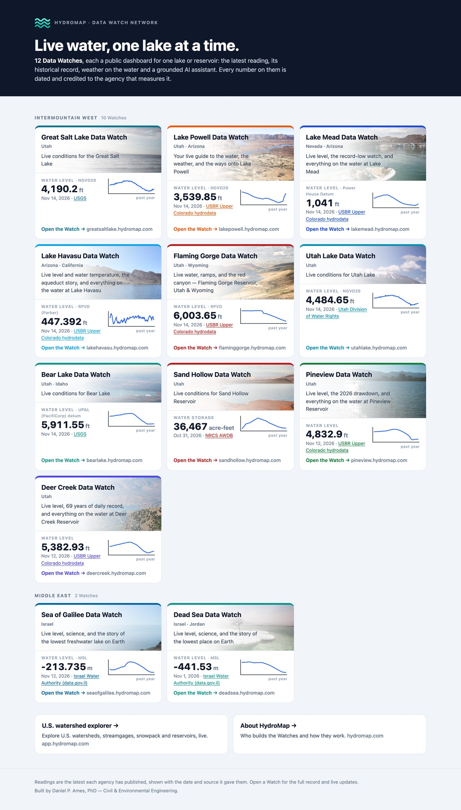
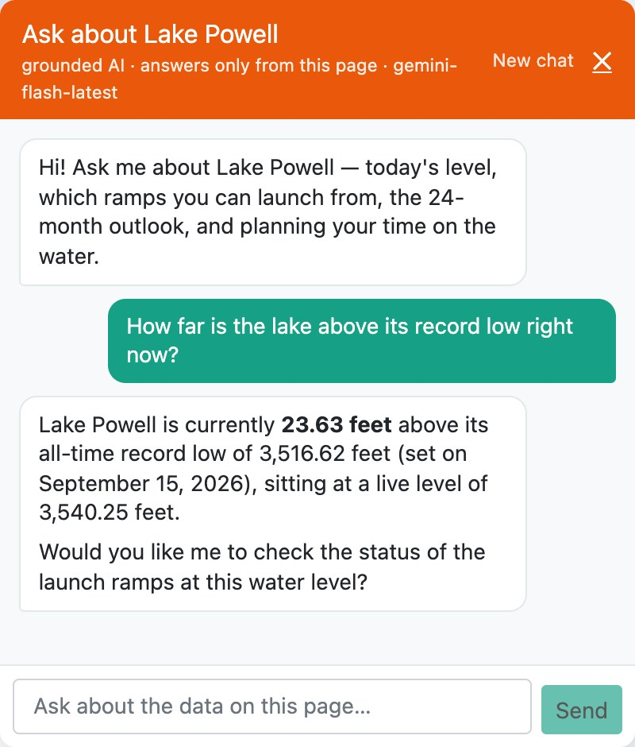
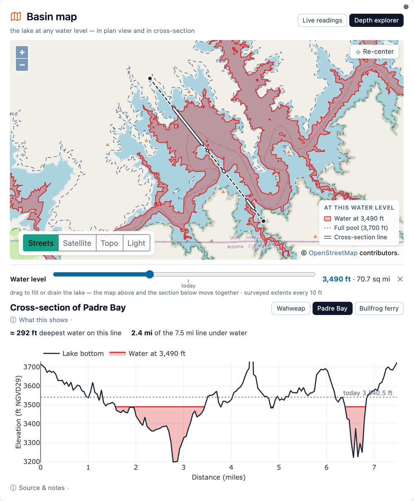
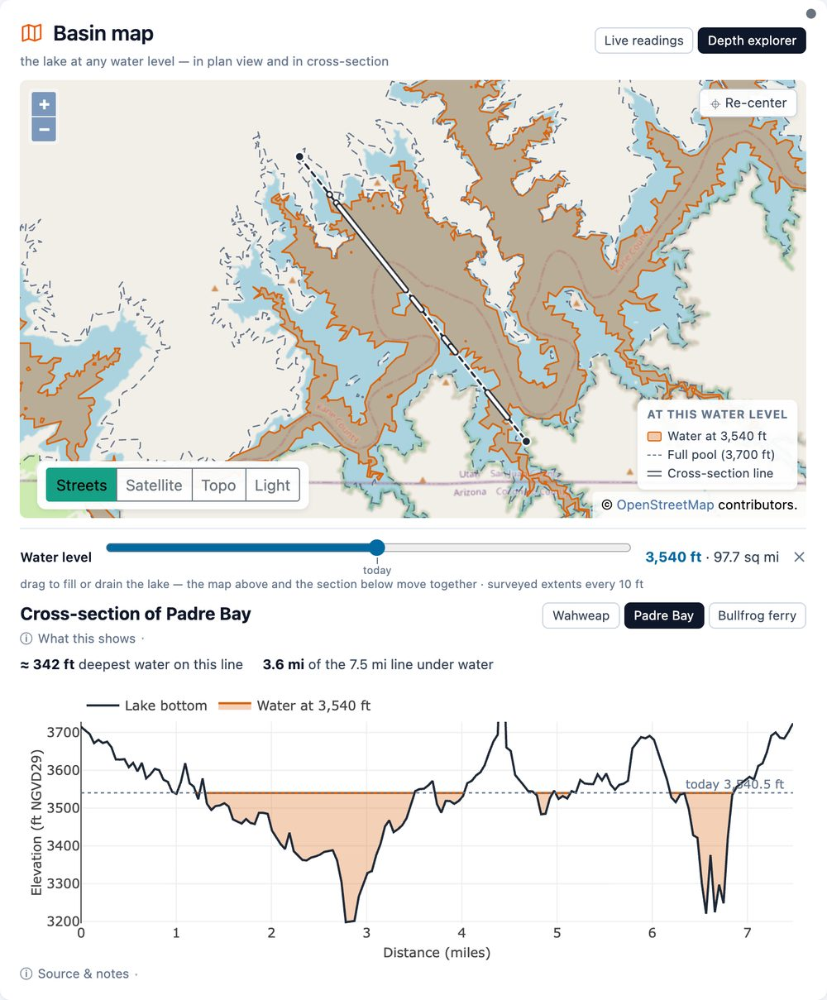
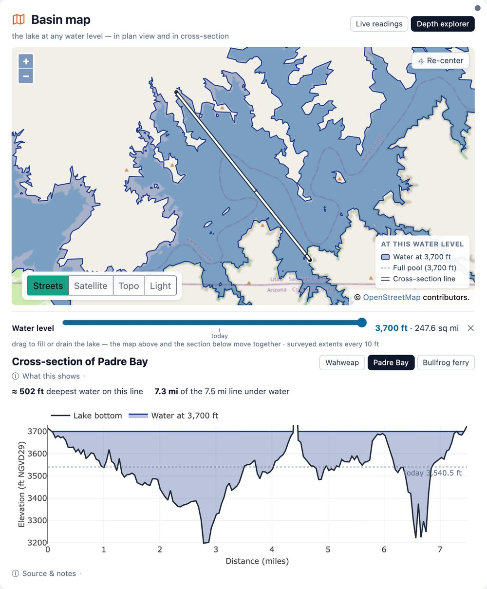
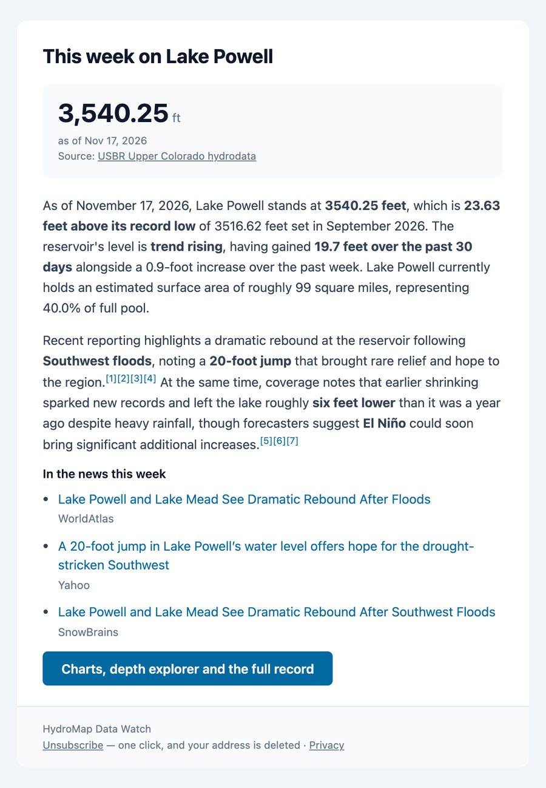

Lake Powell on Nov 18, 2026: 3,540.25 ft, 23.6 ft above its Sep 2026 record low
The pale band on the canyon walls is where the water stood. Level from USBR at Glen Canyon Dam, as the Lake Powell Data Watch reports it.
Reflection Canyon, Glen Canyon National Recreation Area. NPS Photo / Gary Ladd, public domain.
Abstract
Geospatial AI is changing how water data reaches the public, but its usefulness for real decisions depends on trust: a model that fabricates a reservoir elevation or streamflow is worse than no answer. We present the HydroMap Data Watch Network, pairing interoperable data federation with a grounded-by-design GeoAI interface. A framework-free core federates more than a dozen live public services (USGS, the Bureau of Reclamation, NRCS, NOAA's National Water Model, GEOGLOWS, CUAHSI community data, and state agencies) through a single adapter, caching, and quality-control layer. It serializes exactly the numbers each dashboard displays into a single labeled snapshot. A conversational assistant answers only from that snapshot and a small set of registered data tools; it is instructed never to invent numbers, to say so plainly when the data cannot answer, and to return every figure with its public source. A config-as-data, multi-tenant design turns each localized dashboard into a configuration entry, so one core and a single low-cost deployment serve many waterbodies, and one improvement in grounding or provenance reaches all of them at once. Using Great Salt Lake and Lake Powell as case studies, we share transferable patterns for reproducible, transparent GeoAI: one source of truth for page and model, citation-as-code, and graceful degradation across unreliable upstreams. These broaden trustworthy access to water resources information.
1One core, many lakes
Each Data Watch is a JSON config, not a fork: branding, sources, chat persona and tools. One ~$6/mo server runs all 12, so a grounding fix reaches every lake at once.

lakes.hydromap.com, the whole page: every Watch with its photo, credited reading and past-year sparkline (captured Nov 15, 2026).
The config names the lake’s data sources, its vertical datum, its projections, the tools its chat may call and the voice of its persona. Everything else (the adapters, the cache, the snapshot, the chat pipeline and the page itself) is shared code, so a fix to grounding or provenance ships to every lake in one deploy.
Ask any lake
One live question to each of eight more Watches, Nov 14, 2026 (Lake Mead re-asked Nov 18). Replies are verbatim; “…” marks cuts.
Lake Mead
How close is Lake Mead to its record low?
Lake Mead is currently 4.07 feet above its all-time record low of 1,037.16 ft (set on October 22, 2026), standing at an elevation of 1,041.23 ft Power House Datum as of November 17, 2026.
Source cited: USBR gage at Hoover Dam · Nov 17
Flaming Gorge
Where is Flaming Gorge projected to be next spring?
According to the Bureau of Reclamation’s 24-Month Study… March 2027: ~5,995.1 ft RPVD · April: ~5,994.2 ft · May: ~5,992.0 ft… Reaching ~5,992 ft in May would set a new historic low for the reservoir.
Source cited: USBR 24-Month Study
Utah Lake
Is it safe to swim at Utah Lake right now?
According to the latest monitoring data from the Utah Department of Environmental Quality (DEQ) (sampled October 31, 2026), the official status across most monitored sites on Utah Lake is HAB HW (Harmful Algal Bloom Health Watch)… never drink or swallow lake water…
Source cited: Utah DEQ samples · Oct 31
Sea of Galilee
How far is the Kinneret below the upper red line?
The upper red line is set at −208.80 m MSL… With the Sea of Galilee currently at −213.735 m MSL (as of November 12, 2026), the lake is 4.935 meters (approximately 4.94 m) below the upper red line.
Source cited: Israel Water Authority · Nov 12
Dead Sea
Have there been any earthquakes under the Dead Sea lately?
Yes. According to the Geological Survey of Israel’s seismic network, there have been 87 earthquakes… over the past 365 days… Largest in the past year: Magnitude 3.9 on January 15, 2026.
Source cited: Geological Survey of Israel seismic network
Sand Hollow
How full is Sand Hollow Reservoir?
As of the most recent monthly reading on October 31, 2026, Sand Hollow Reservoir held 36,467 acre-feet… (Storage data is reported as a monthly end-of-month figure by the NRCS… so this reflects the end of October rather than a live daily reading.) …71.0% full.
Source cited: NRCS month-end reading · Oct 31
Bear Lake
Is Bear Lake higher or lower than a year ago?
Bear Lake is lower than it was a year ago. Today (November 13, 2026): 5,911.6 ft (UP&L datum) at the Bear Lake at State Park Marina USGS gage. One year ago (November 13, 2025): 5,915.1 ft. …approximately 3.5 feet lower.
Source cited: USGS gage at State Park Marina
Lake Havasu
How warm is the water at Lake Havasu right now?
The water temperature at Lake Havasu is 70.3°F (as of November 13, 2026). This reading comes from the Bureau of Reclamation’s sensor at Parker Dam.
Source cited: USBR sensor at Parker Dam · Nov 13
2From public data to a grounded answer
USGS
USBR
NRCS SNOTEL
NOAA NWPS
NWS
GEOGLOWS
Open-Meteo
Utah DWRi
Utah DEQ
Israel Water Authority
Geological Survey of Israel
Landsat
▼
Adapter, cache and quality-control layerretries · despikes stuck sensors · draws gaps as gaps
Live API→Memory→Disk→Git
When an upstream fails, the page falls back step by step to cached copies. Stale values are flagged: they can’t set a record or open a ramp.
▼
Personafrom the lake’s JSON config: voice, audience, what to stress
Dashboard snapshotup to 16 labeled sections: value, unit, gage, agency, date
Rulesuse only this data · never invent numbers · say so when it can’t answer
▼
Gemini Flash ⇄ 12 data tools, up to 4 calls per questiontemperature 0.2 · Flash-Lite fallback · 15 s / 50 s deadlines · circuit breaker
lake_level_history
ramp_status
lake_projection
milestone_watch
cross_section_depth
estimate_surface_area
river_inflows
weather_forecast
submerged_hazards
swim_advisory
background_knowledge
submit_question_for_research
▼
Answer with its sourcenumbers come only from the snapshot or a tool result: value, gage, datum and date
No data? Say sosays plainly it can’t answer, offers to forward the question, and only on the reader’s yes screens it and files it for the team
The same adapter layer feeds the depth explorer, where two agencies’ data meet under one slider (section 5).
3The chat in action

The live panel says what it is: grounded AI, answers only from this page. Each answer carries the gage, the datum and the date.
Same question, two ways. Each pair below asks the Lake Powell Data Watch and the same Gemini model (gemini-flash-latest, temperature 0.2) called directly, with no persona, no dashboard snapshot and no tools; its question names Lake Powell. Both asked Nov 14, 2026. Verbatim excerpts; “…” marks cuts.
25
questions the data couldn’t answer, forwarded to the team on the reader’s yes (late July to Nov 18, 2026)
From the snapshot Which launch ramps can I use right now?
Lake Powell Data Watch
Wahweap Stateline Auxiliary: OPEN (est.). The lake is 24.6 ft above its 3,515 ft cutoff… Bullfrog North: OPEN, launch at your own risk (NPS)… All other public ramps are below their usability thresholds… Always confirm ramp availability before your trip on the NPS Glen Canyon Changing Lake Levels page.
↳ Today’s level (3,539.64 ft) against each ramp’s cutoff
Same Gemini model, no data or tools
Stateline Auxiliary Ramp: OPEN… Wahweap Main Ramp: OPEN / PARTIALLY OPEN (depending on motorized boat size)… Bullfrog Main Ramp: OPEN… Open to motorized vessels of all sizes. The ramp has been extended to handle lower lake elevations.
↳ No level, no date. At today’s 3,539.64 ft, Wahweap Main (3,545 ft cutoff) and Bullfrog Main (3,578 ft) are out
Calls a tool How deep would the water be across Padre Bay at full pool?
Lake Powell Data Watch
At full pool (3,700 ft NGVD29), the maximum water depth across Padre Bay would reach 501.9 feet… About 7.3 miles of the transect would be under water, compared to roughly 3.6 miles today. (Source: USGS 1m Topobathymetric DEM of Lake Powell…)
↳ cross_section_depth on the USGS bathymetry
Same Gemini model, no data or tools
In the Submerged River Channel (The Deepest Point)… Depth: 480 to 520+ feet (145 to 160 meters)… Across the Open Bay… Depth: 150 to 350 feet… subtract roughly 120 to 170 feet from the numbers above to reflect current or recent typical conditions.
↳ Right ballpark, but ranges with no source; the USGS survey gives 501.9 ft
Can’t answer What will the lake level be on July 4, 2030?
Lake Powell Data Watch
There is no official projection available for July 4, 2030. The Bureau of Reclamation only publishes operational forecasts up to 24 months out (the 24-Month Study, currently running through mid-2027)… Would you like to see the Bureau of Reclamation’s current projections through 2027 instead?
↳ Says it can’t, and why; offers what it does have
Same Gemini model, no data or tools
It is impossible to know the exact water level of Lake Powell on July 4, 2030… Bureau of Reclamation Projections… Dry/Stress Scenarios: Hovering near or below the minimum power pool (3,470 to 3,500 feet)… Moderate/Current Policy Scenarios: … (3,520 to 3,580 feet)…
↳ Unsourced ranges under Reclamation’s name; calls 2030 “six years out”
4Anatomy of a Data Watch
The whole Lake Powell page, top to bottom, live on Nov 18, 2026. Every box is a section a reader can use on its own; every number in it carries its agency and date.
Live level, with its source agency, gage and date; 7- and 30-day change; email sign-up; “Ask” opens the grounded chat
Postcard views every photo credited and licensed
This week, in plain language AI summary of the page’s own numbers; news cited [n]
Basin map + depth explorer live gages; drag the water level and the shoreline and cross-section move together
Weather on the water NWS forecasts at the marinas
Level history full record with full pool, record low, power and dead pool
By the numbers lake facts, each with a source
River inflows USGS observed + NWS forecast
Where the lake is headed USBR 24-Month Study
Ramps & marinas status estimated from today’s level
Hazards & passages what today’s level means on the water
How big is the lake? area, volume and depth; Landsat then and now
Know before you go rules and advisories from the agencies
Plan your trip rentals, fees, licenses, fishing
The lake community who to follow for real-time news
Common questions short answers from the same research that grounds the chat
Who watches the lake the agencies that manage it
Data sources every feed on the page, listed
About & how to cite a citation line generated by the page
5The depth explorer: two agencies under one slider
Drag the water level and the lake fills or drains: the shoreline on the map and the waterline on a cross-section move together. The map is the USGS 1 m topobathymetric survey of Lake Powell, with shorelines surveyed every 10 ft; the level is USBR’s reading at Glen Canyon Dam. Here is the Padre Bay line at three levels, captured live on Nov 19, 2026.

3,490 ft, near minimum power pool: 70.7 sq mi of lake; ≈292 ft deepest on the line; 2.4 of 7.5 mi under water

3,540 ft, today: 97.7 sq mi; ≈342 ft deepest; 3.6 mi under water

3,700 ft, full pool: 247.6 sq mi; ≈502 ft deepest; 7.3 mi under water
Why it matters for grounding
The chat’s cross_section_depth tool reads the same survey as the picture. Asked how deep Padre Bay would be at full pool, the Data Watch answers 501.9 ft and names the USGS survey; the same model with no tools gives a range of 480 to 520+ ft with no source (section 3).
Try it
Open lakepowell.hydromap.com/?depth=3540, switch the basin map to Depth explorer, and drag the slider. The Wahweap, Padre Bay and Bullfrog ferry lines each have a cross-section.
6Summaries and email
Daily: Gemini writes the page’s summary card from the same snapshot plus numbered headlines. A citation that matches no headline is dropped; water numbers never cite news.
Weekly email: the same text, not a rewrite, with the agency reading and its date. Plus record and milestone alerts. No tracking pixels.
Rendered from the app’s own email template with the Nov 18 Lake Powell summary (first 3 of 7 news items shown).

7Does it stay grounded?
30 questions asked of the live chat on Nov 11, 2026 (Lake Powell and Great Salt Lake, each a fresh conversation), scored against the dashboard snapshot and the data tools’ own outputs.
17/20
answers right
snapshot 8/10 · tools 9/10. Misses: a trend word, a rounded threshold, ‘tonight’ for ‘tomorrow’
12/20
named a source
gage, agency or link in the reply itself; the rest leaned on the page
10/10
invented nothing
on unanswerable questions; 6/10 also offered the hand-off, 3 drifted into general knowledge
What we learned. Grounding held: no invented figures, and the misses were wording, not made-up data. Attribution is the weak spot, so the next step is structured source links on every chat answer. Policy questions can pull the model into general knowledge.
Patterns that transfer
One source of truth for the page, the chat, the summary and the email.
Citation as code: cite lines generated from one record; summary links checked.
Graceful degradation: stale data flagged, not hidden, when upstreams fail.
Config as data: one improvement ships to every lake.
8Use so far
Since tracking began (late July 2026), as of Nov 18, 2026: a snapshot, not a trend.
12
Data Watches on one codebase
16,885
page visits, 9,317 of them in the last 30 days
113
chat questions, not counting our own test questions
51
confirmed email subscribers on 7 Watches
25
questions forwarded to the team
Page visits by Data Watch
Lake Mead6,564
Lake Powell3,846
Great Salt Lake2,377
Sea of Galilee891
Flaming Gorge655
Pineview467
Utah Lake454
Lake Havasu374
Dead Sea351
Sand Hollow308
Deer Creek308
Bear Lake290
Tools the chat called, last 30 days
background_knowledge32
lake_level_history15
estimate_surface_area6
lake_projection3
cross_section_depth2
ramp_status2
recent_earthquakes1
swim_advisory1
weather_forecast1
63 calls in all, including our own test questions.